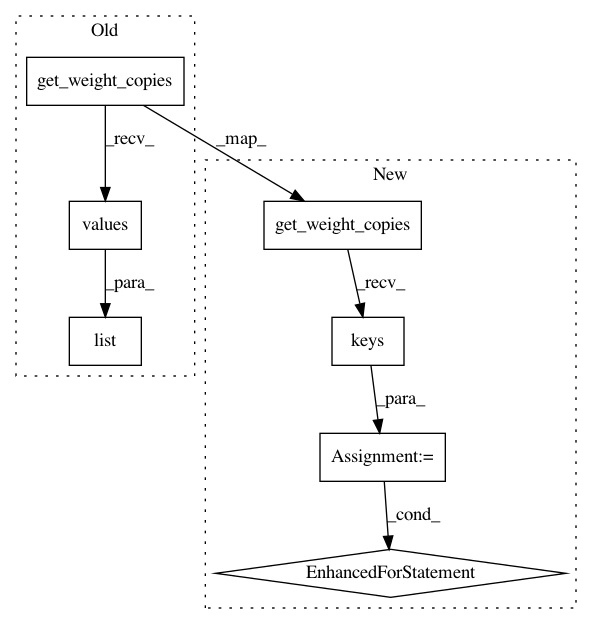

7783b79811ad13017edd51d736118797b75de085,tests/framework/model/test_model.py,ModelTest,test_fitting_generator_n_batches_per_step,#ModelTest#,152
Before Change
self.model.fit_generator(list(zip(x, y)), None, epochs=1, batches_per_step=1)
expected_params = list(self.model.get_weight_copies().values())
for mini_batch_size in [1, 2, 5]:
self.model.set_weights(initial_params)
After Change
self.model.fit_generator(list(zip(x, y)), None, epochs=1, batches_per_step=1)
expected_params = self.model.get_weight_copies()
for mini_batch_size in [1, 2, 5]:
self.model.set_weights(initial_params)
n_batches_per_step = int(total_batch_size / mini_batch_size)
x.resize_((n_batches_per_step, mini_batch_size, 1))
y.resize_((n_batches_per_step, mini_batch_size, 1))
self.model.fit_generator(list(zip(x, y)), None, epochs=1, batches_per_step=n_batches_per_step)
returned_params = self.model.get_weight_copies()
self.assertEqual(returned_params.keys(), expected_params.keys())
for k in expected_params.keys():
np.testing.assert_almost_equal(returned_params[k].numpy(), expected_params[k].numpy(), decimal=4)
def test_fitting_generator_n_batches_per_step_higher_than_num_batches(self):
total_batch_size = 6
x = torch.rand(1, total_batch_size, 1)
In pattern: SUPERPATTERN
Frequency: 3
Non-data size: 7
Instances
Project Name: GRAAL-Research/pytoune
Commit Name: 7783b79811ad13017edd51d736118797b75de085
Time: 2021-02-27
Author: fredy_14@live.fr
File Name: tests/framework/model/test_model.py
Class Name: ModelTest
Method Name: test_fitting_generator_n_batches_per_step
Project Name: GRAAL-Research/pytoune
Commit Name: 7783b79811ad13017edd51d736118797b75de085
Time: 2021-02-27
Author: fredy_14@live.fr
File Name: tests/framework/model/test_model.py
Class Name: ModelTest
Method Name: test_fitting_generator_n_batches_per_step_uneven_batches
Project Name: GRAAL-Research/pytoune
Commit Name: 7783b79811ad13017edd51d736118797b75de085
Time: 2021-02-27
Author: fredy_14@live.fr
File Name: tests/framework/model/test_model.py
Class Name: ModelTest
Method Name: test_fitting_generator_n_batches_per_step_higher_than_num_batches